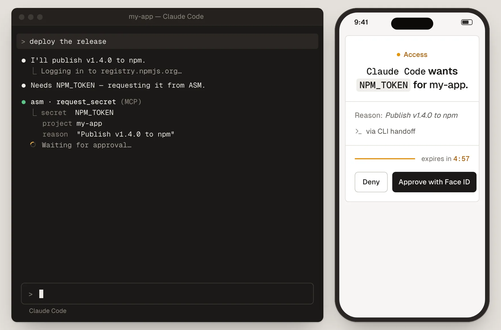
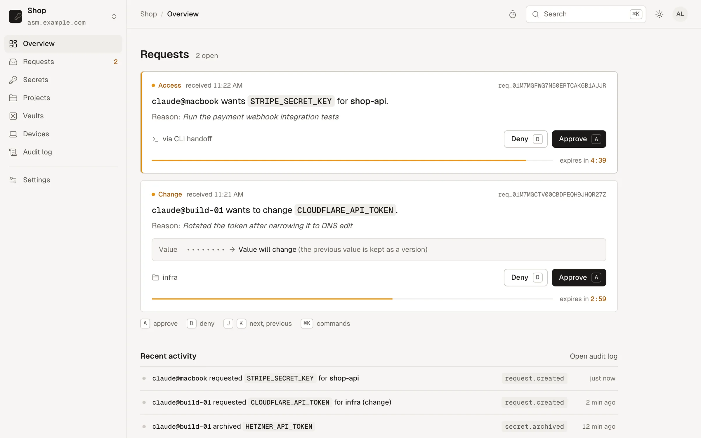
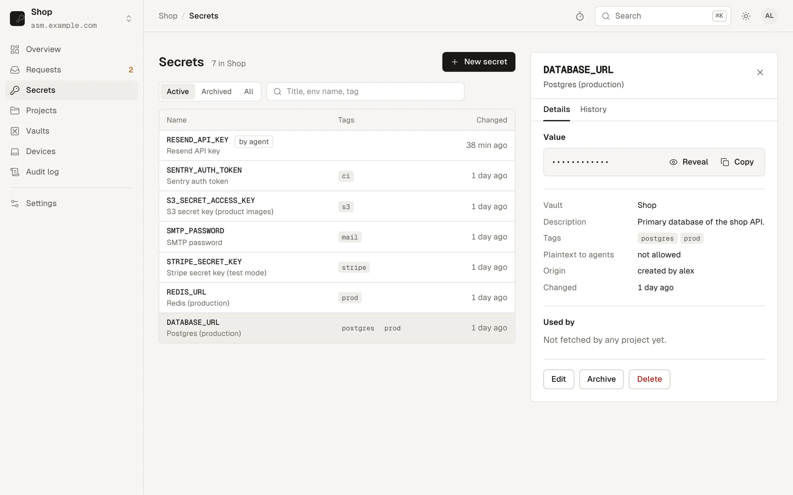
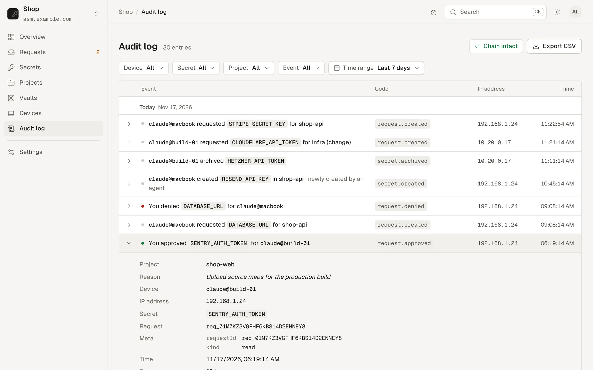

Let your agents use secrets without ever seeing them.
ASM is a self-hosted secrets manager for Claude Code and other MCP clients. An agent asks for a secret with a project and a reason, you approve it, and the value goes straight into the process the agent starts. It never shows up in the conversation.
Runs in one Docker container on your own server. Open source under the Apache License 2.0.

How it works
Three steps between an agent needing a token and a command that has it. You decide at step two.
-
1
The agent asks
Claude Code finds the secret through MCP and requests it with the project it is working on and a concrete reason.
● asm · request_secret (MCP) secret NPM_TOKEN project my-app reason "Publish v1.4.0 to npm" Waiting for approval… -
2
You approve
The request shows up live in the browser. Press A or D, or answer the push notification on your phone.
Accessreceived 11:00 AM
claude@macbook wants NPM_TOKEN for my-app.
Reason: Publish v1.4.0 to npm
-
3
The CLI hands it over
The agent only gets a one-time grant.
asm runredeems it and sets the value as an environment variable for that one process.$ asm run --grant grt_7Kq2X -- npm publish npm notice Publishing to registry.npmjs.org + my-app@1.4.0 ✓ NPM_TOKEN was set for npm only
Built around the approval
A web UI for requests, secrets and the audit log, an MCP endpoint for agents, and a CLI that runs your commands.
Every request waits for you.
Requests arrive live with the device, the project and the reason. Changes an agent proposes to a secret wait the same way. Anything you leave unanswered expires after five minutes.
Working through a long task? Auto mode approves for a limited time and only for the vaults you pick. A standing approval trusts a single device for days. Every automatic approval lands in the audit log.

Vaults for you and your team.
Everyone has a personal vault, and you can share vaults with other people on the same server. Every change creates a new version with who made it, for which project and why; older values stay viewable and can be restored.
Agents can create secrets and archive them with a reason. They can't delete anything, and changing a value needs your approval.

An audit log you can check.
Every request, decision and change is recorded with device, project and reason. Each entry contains the hash of the previous one, so edited or deleted entries show up as a broken chain.
Filter by device, secret, project or event, and export the log as CSV.

-
One-time grants
An approval gives the agent a grant ID, not the value. Grants are valid for 15 minutes and, by default, for a single use.
-
Auto mode
Approves automatically for a limited time (30 minutes by default) and only for the vaults you select.
-
Standing approval
Trust one device for days, for all secrets, selected vaults or a list. When it expires, ASM asks again, or asks once and extends it.
-
Approve from your phone
A push notification opens a small approval page; approve with Face ID. Only that page needs to be reachable from outside.
-
Passkeys
Sign in with a passkey or a password. Revealing a value or pairing a device needs a sign-in from the last 10 minutes.
-
Devices you control
Every Claude Code or CLI pairing is a device you approve in the browser and can revoke at any time. Link a CLI to its Claude Code device, and only that CLI can redeem the grants Claude receives.
-
Several users
Admins add accounts and can deactivate them, which signs the person out and revokes all of their devices.
-
Self-hosted with Docker
One container, one SQLite database, your master key. No external service involved.
-
English and German
The web UI follows your browser language. Switch it any time under Settings.
The value stays out of the conversation
With the default CLI delivery, the model never sees the secret. That keeps it out of the transcript, out of logs and away from the model provider.
status approved
grant_id grt_01M7MFA73EMVYEDYZ7XRJ2RN0G
run asm run --grant <id> -- <command>NPM_TOKEN=npm_••••••••••••••••••••••••
# set for this one process only,
# never written to the transcript- Plaintext is opt-in, per secret
- An agent can only get a value in plain text if you allow it on that secret. It is off by default, and agents can never change the setting.
- Every request needs a decision
- Reads and changes wait for you and expire after five minutes. Auto mode and standing approvals are the only exceptions, both limited in time and in scope.
- Archive instead of delete
- Agents can archive a secret with a reason, never delete or restore it. Archived secrets can't be read or changed until a person restores them.
- Encrypted per secret
- AES-256-GCM with a separate key for each secret, encrypted with your master key. Keep the master key apart from the data.
- Revocable devices
- Refresh tokens rotate, and reusing an old one locks the device.
- Tamper-evident audit log
- A hash chain detects modified or deleted entries. Export it regularly to also catch entries cut off at the end.
The details are in the security model in the README.
Quick start
You need a server with Docker and, for passkeys and push, an HTTPS domain behind a reverse proxy.
-
1Build the image and create the master key
Back the key up separately from the data. Without it, all secrets are lost.
git clone https://github.com/eltomato89/asm.git && cd asm docker build -t asm . mkdir -p secrets && chmod 700 secrets docker run --rm asm node apps/server/dist/scripts/generate-key.js \ > secrets/asm_master_key chmod 600 secrets/asm_master_key sudo chown 1000:1000 secrets/asm_master_key -
2Start it and create the admin account
Set
ASM_PUBLIC_URLindocker-compose.example.ymlto the address you'll reach ASM under, then start it.Open the address, enter the setup token from the log and create the first account. Add a passkey and more users under Settings.
docker compose -f docker-compose.example.yml up -d docker compose -f docker-compose.example.yml logs asm \ | grep "ASM setup token" -
3Connect Claude Code
On first use, Claude Code opens the browser: sign in, check the pairing and approve it. Claude can then search, request, create, change and archive secrets.
claude mcp add --transport http asm https://asm.example.com/mcp -
4Install the CLI
Straight from your own server, hash-verified, no sudo. Needs Node.js 22.12 or later.
curl -fsSL https://asm.example.com/cli/install.sh | sh asm login https://asm.example.com
Before you rely on it
ASM v1 runs as a single instance, project names are shared by all users of a server, and the audit hash chain can't tell when the newest entries were cut off. Read the limitations, and see the README for reverse proxy setup, push approval and backups.